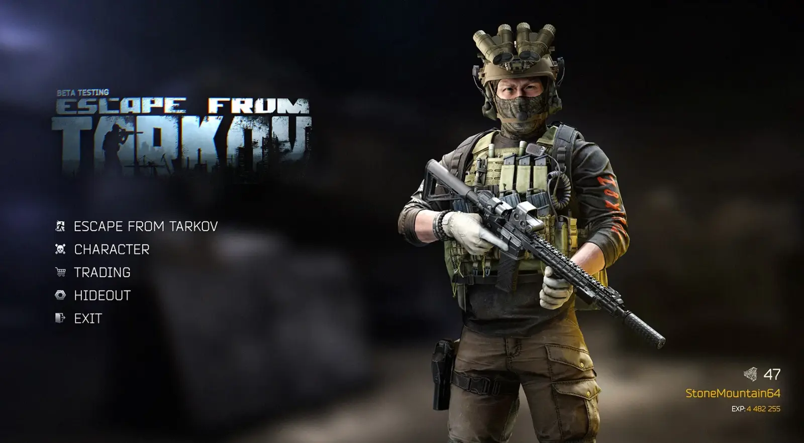
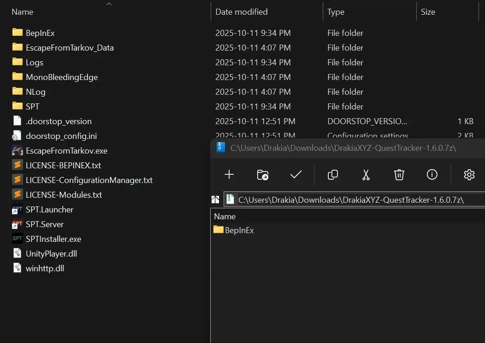
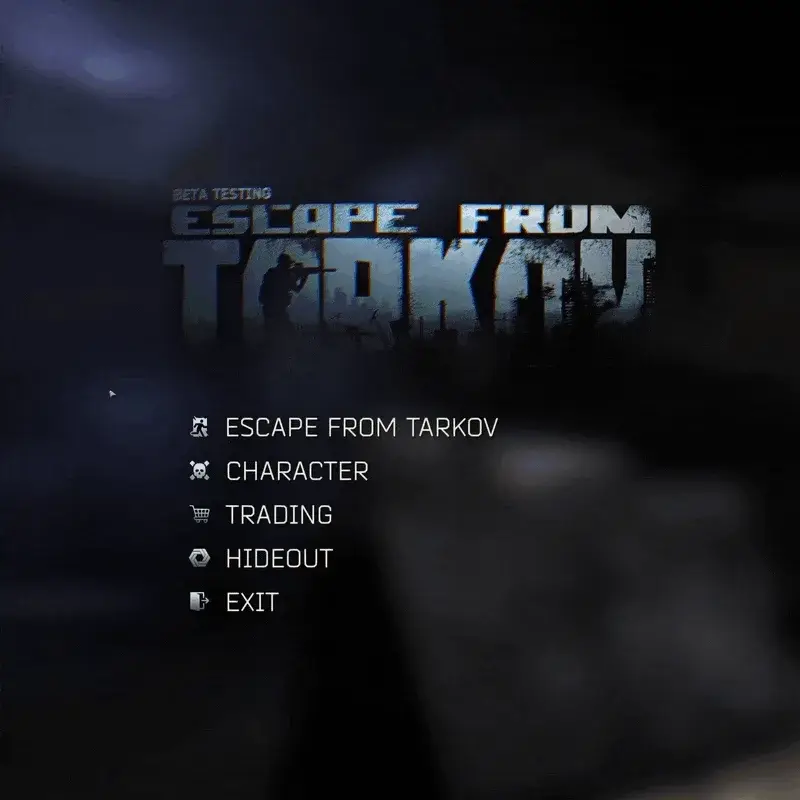
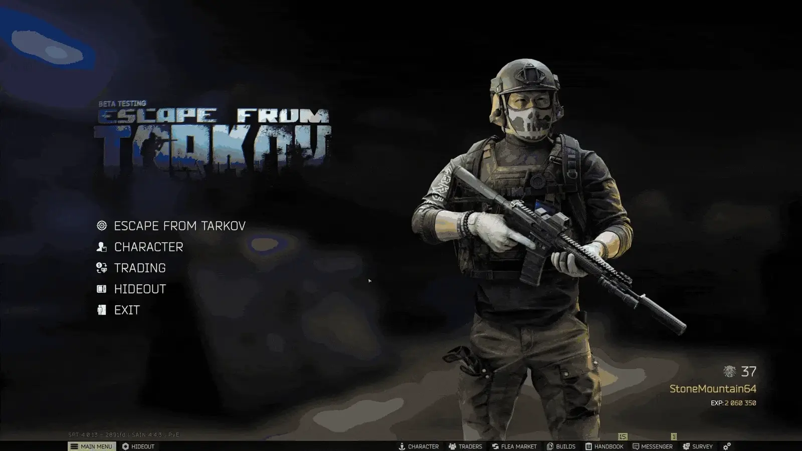
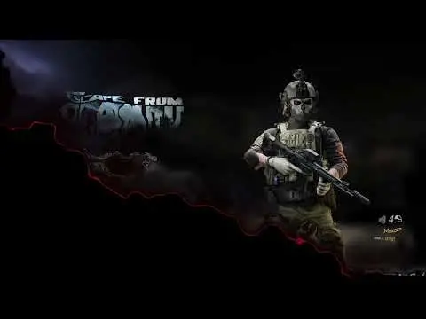

WTT - Menu Overhaul
- Downloads
- 107,070
- Favourites
- 147
- Mod lists
- 299

Menu Overhaul replace the extremely uninspiring main menu that’s in the game by default. Your player is added to the first menu screen. It comes packed with a lot of options in the F12 menu to place things where you want (including advanced options). You can rotate the player by clicking and dragging the mouse (like in raid loading screen).
For feature requests and reporting bugs, please use the GitHub repo for this mod. Do not share logs in the comments on Forge. I will not answer those here. It’s much easier to track on Github.
This mod only officially supports the Factory theme. Using any other theme is considered an unsupported configuration. Errors and warnings in the logs are expected when running this mod with non-Factory themes. Do not report these errors to the Discord support channels or the SPT support team. Support will only be provided for issues that occur while using the Factory theme. You are welcome to experiment with other themes, but you do so entirely at your own risk.
Install the mod by dragging the first folder in the zip into your SPT install directory:

Uninstall by removing “MoxoPixel.MenuOverhaul” folder inside BepInEx/plugins/



-
When extracting from a raid while wearing NVGs, the avatar on the main menu has NVGs in both the on and off position (I would need help fixing this)
-
When changing language to anything except English, the “Escape From Tarkov” menu item looks displaced. You can change the position of that menu item in the F12 menu (Activate “Advanced Settings” in F12 menu)
What is Welcome To Tarkov?
Welcome To Tarkov (WTT) is a mod for SPT AKI that has been in development for over a year. What started as a small passion project has grown in size to incorporate 15+ core members as well as contributions from other well-known mod authors and friends of WTT alike.
How does Welcome To Tarkov change the game?
As a mod, WTT overhauls SPT AKI, touching on almost every vanilla game system, as well as adding completely new systems to the game and its core mechanics. Inspired by open-world hardcore survival projects like STALKER: Anomaly and STALKER: GAMMA, WTT takes SPT’s artificial multiplayer MMO difficulty adders and replaces them with a challenging world economy, loot scarcity rebalancing, a lore friendly quest overhaul, and a map-traveling system built from rewritten portions of the Traveler mod allowing seamless travel between maps. Aside from its changes to the game’s core properties, WTT also adds to the world’s variety of traders, NPC’s, characters, items, and quests:
- Over 1,000 custom bundles adding new weapons, attachments, wearables, containers, food, medical, and barter items.
- New bosses with their own custom gear that will be properly incorporated into WTT’s quest lines.
- New, meaningful traders with their own lore-friendly quests and narrative elements to help the player progress through the story-line of WTT.
- New playable characters and outfits that will add to the player’s customization abilities.
- New quest types incorporating brand new map extraction points, putting the player’s knowledge and familiarization of SPT’s maps to the test.
- Welcome To Tarkov stands as one of the largest mods created for SPT thus far.
Want to follow our progress?
You can follow the project through its development in our discord here:
🎗️ If you like my mods, consider leaving a small donation: Ko-Fi
Version
1.2.2
- Improved hover effect of menu items, now looks more professional
- Added advanced settings for hover effects
- Added setting for moving individual menu items (user requested)
- Refactor behind the scenes to make the project more solid
Install by dragging the folder in the ZIP into your SPT folder, remember to backup your custom backgrounds or icons
Version
1.2.1
- New advanced settings for Player Preview camera rotation and position
- Updated icons to fit default EFT style/theme more
- Users now have the ability to change background and icon images by replacing the ones that comes with this mod
- Added option for enabling Player Preview animations (same animations as on matchmaking/loading screen)
- Added option for increased anti-aliasing and texture fidelity of Player Preview.
Version
1.2.0
- Refactored whole project to better use original methods for cleanup. Now the mod will only affect initial main menu, weapon/armor modding screens. Before this change our menu changes bleed into other screens like in raid menu and other similar menu views.
- Added ability to spin character in main menu!
Install by dragging the folder in the ZIP into your SPT folder
Version
1.1.0
Updated to 4.0! Enjoy!
Version
1.0.9
- Added the ability to set a custom color for some elements
- Updated one of the lights on the player model to share that color
- Improved project structure and logic
Version
1.0.7
Updated to SPT version 3.11
Version
1.0.5
- Plugin now disables while in-raid. No more preview character and broken buttons when pressing ESC in-raid.
- Changes to the player preview. It had some visual artifacts after returning to the main menu inside the hideout. This is now fixed
Known issue: There can be a white line crossing over your character preview on rare occasions. Should go away if you run a raid. This happened 1 out of 10 times loading the menu for me. I will try to fix it.
This release is only for SPT 3.10+